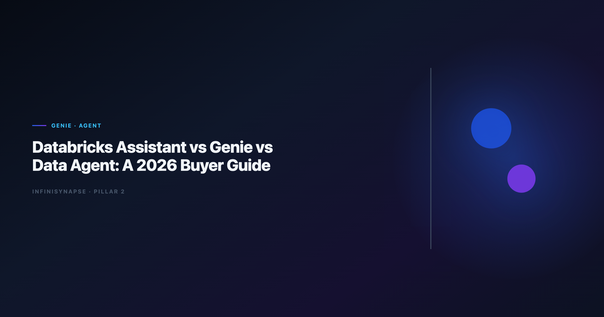

Databricks Assistant vs Genie vs Data Agent: A 2026 Buyer Guide
By the InfiniSynapse Data Team · Last updated: 2026-06-12 · We evaluate Databricks-native AI surfaces and cross-platform Data Agents on recurring lakehouse and multi-source KPI workflows.

Table of Contents
- TL;DR
- Three Categories: Assistant, Genie, and Data Agent
- Databricks Assistant: What It Optimizes For
- Databricks Genie: What It Optimizes For
- Data Agent Category: What It Optimizes For
- Head-to-Head Comparison Table
- Five-Pillar Scorecard
- Workflow Tests: Where Each Wins
- Decision Matrix by Team Profile
- InfiniSynapse as a Data Agent Reference
- Rollout and Procurement Notes
- Frequently Asked Questions
- Conclusion
TL;DR
Databricks Assistant is a coding copilot inside notebooks and SQL editors — it speeds authoring, not autonomous analysis. Databricks Genie is natural-language analytics over governed lakehouse assets — strong for Databricks-first self-service. Data Agents (including InfiniSynapse) accept business goals, orchestrate multi-step work across systems, ship audit trails, and distill memory. The Databricks Assistant vs Genie choice is intra-platform; adding a Data Agent answers whether your analytical contract stays inside Unity Catalog or spans CRM, finance, and ops systems.
Who this is for: lakehouse platform owners, analytics leads standardizing on Databricks, and procurement teams confused by three similarly branded AI surfaces.
What you'll learn:
- Clear category boundaries for Assistant, Genie, and Data Agent
- A buyer comparison table with governance and memory columns
- Three workflow tests with winner per scenario
- How InfiniSynapse compares when Genie is not enough
Scope note: For InfiniSynapse-specific lakehouse comparison, see InfiniSynapse vs Databricks Genie.
For Data Agent definitions, see What Is a Data Agent?.
For the Code Agent angle on the same keyword family, see Code Agent vs Data Agent.
For hybrid analyst accountability, see AI Data Analyst vs Human Analyst.
Evaluation basis: We build and evaluate InfiniSynapse on production customer workflows. Governance, adoption, and security context is cited inline throughout this guide—not in a standalone reference list.
Why Buyers Compare Assistant and Genie
APAC rollouts should cross-check Wikipedia conceptual data model overview for secure deployment practices.
Databricks ships multiple AI surfaces. Buyers searching Databricks Assistant vs Genie usually want to know which license line to fund — but the better question is which objective function each product optimizes:
| Product | Optimizes for | Typical user |
|---|---|---|
| Databricks Assistant | Faster code and SQL authoring | Data engineer, ML engineer |
| Databricks Genie | NL questions on governed lakehouse data | Analyst, business user in workspace |
| Data Agent (category) | Defensible multi-step answers + memory | Analyst + platform + business stakeholder |
Confusing Assistant with Genie leads to disappointed analysts ("it won't run my monthly report unattended"). Confusing Genie with a full Data Agent leads to integration gaps when answers require Salesforce, Postgres, or email-distributed files outside Delta Lake.
Warehouse vendors describe governed NL2SQL agents in Microsoft Excel support—compare memory depth and audit trails against your internal requirements. NIST AI Risk Management Framework shows how warehouse-native semantic layers change NL2SQL grounding expectations — useful context when Databricks Assistant vs Genie debates expand to multi-warehouse estates.
Three Categories: Assistant, Genie, and Data Agent
| Category | What it does | Buyer mistake to avoid |
|---|---|---|
| Assistant | Inline code completion and refactor in notebooks; user drives every run | Expecting unattended KPI delivery |
| Genie | NL questions over Unity Catalog-governed tables inside the workspace | Expecting CRM + lakehouse orchestration without exports |
| Data Agent | Goal-led multi-step execution, cross-system connectors, audit trail, memory | Buying when entire estate is Databricks-only with no recurrence need |
Data Agents take a goal, plan phases, query across connectors, log audit trails, distill memory, and support multi-entry (web, chat, API). Category definition: What Is a Data Agent?. The Databricks Assistant vs Genie comparison is horizontal (builder vs consumer). Data Agent is vertical (full workflow ownership).
Databricks Assistant: What It Optimizes For
Databricks Assistant accelerates notebook and SQL editor work — Python snippets, Spark refactor hints, error explanation. It behaves like GitHub Copilot scoped to the Databricks IDE. Strengths: reduces typing time for engineers, stays context-aware within open notebook cells, and keeps governance friction low because output is draft code the human runs. Limits for analytics buyers: no business-goal orchestration, no durable KPI memory across months, no cross-system execution beyond the notebook session, and the wrong category when stakeholders ask for unattended recurring reports.
Multi-source connector design should follow MongoDB documentation when Assistant-generated pipelines must touch systems outside a single notebook.
Databricks Genie: What It Optimizes For
Databricks Genie is Databricks' natural-language analytics interface over governed data assets. It inherits Unity Catalog permissions, Delta Lake structure, and workspace audit context. Strengths: fast self-service for Databricks-standardized teams, NL access without writing every slice by hand, and governance alignment inside the lakehouse perimeter when authoritative metrics live in Delta tables. Limits relative to Data Agents: workspace-bound UI, manual exports for CRM or spreadsheet joins, conversation-scoped memory rather than team cards, and guided exploration instead of fully unattended multi-phase execution.
Data Agent Category: What It Optimizes For
A Data Agent optimizes for defensible answers — not faster typing (Assistant) and not only NL SQL inside one platform (Genie).
| Capability | Assistant | Genie | Data Agent |
|---|---|---|---|
| Business goal input | ○ | ○ | ✅ |
| Multi-phase plan | ○ | ○ | ✅ |
| Cross-system connectors | ○ | ○ | ✅ |
| Audit timeline | ○ | Medium | ✅ |
| Distilled memory | ○ | Medium | ✅ |
| Multi-entry (API/chat) | ○ | Medium | ✅ |
Production rollouts should align access and review controls with the Apache Airflow documentation, especially when autonomous agents query live schemas. Regulated estates should cross-read Governance for AI Data Analysis when Unity Catalog policies must extend to agent orchestration outside the workspace. Teams migrating from sandbox uploads often pair this guide with Code Interpreter Data Analysis vs Data Agent for a full stack narrative. EU-facing teams map control expectations using the Google Sheets documentation when scoping analytics agent governance.
The AI data analyst role pairs with Data Agents: humans frame goals and validate output; agents handle throughput and bookkeeping.
Head-to-Head Comparison Table
| Dimension | Databricks Assistant | Databricks Genie | Data Agent (e.g., InfiniSynapse) |
|---|---|---|---|
| Primary user | Engineer / ML dev | Analyst / power user | Analyst + business stakeholder |
| Input type | Code selection, cell context | Natural-language question | Business goal |
| Execution | Suggest code; human runs | NL → SQL in workspace | Multi-step orchestration + retries |
| Data scope | Notebook-attached data | Unity Catalog tables | Federated connectors + files |
| Governance | Human review of code | Catalog IAM | Connector policies + audit |
| Memory | Session / cell context | Conversation in workspace | Distilled memory cards |
| Best for | Building pipelines faster | Lakehouse self-service NL | Recurring cross-system KPIs |
| Weak for | Unattended reporting | Non-Databricks sources | Databricks-only shops with no cross-source need |
Five-Pillar Scorecard
| Pillar | Assistant | Genie | Data Agent |
|---|---|---|---|
| Autonomy | Low | Medium | High |
| Transparency | Low (draft code) | High in workspace | High (full task timeline) |
| Memory | Low | Medium | High |
| Multi-entry parity | Low | Medium | High |
| Self-correction | Low | Medium | High |
Databricks Assistant vs Genie on pillars: Genie wins autonomy, transparency, and memory for lakehouse consumers. Assistant wins none of the five for analytical outcomes — it wins builder productivity, a different scorecard.
Workflow Tests: Where Each Wins
| Scenario | Winner | Why |
|---|---|---|
| "Refactor this PySpark job" | Databricks Assistant | Coding copilot territory; Genie and agents are the wrong category |
| "What was Q2 revenue by region?" (all data in Delta) | Databricks Genie | Native catalog context; lowest friction for Databricks Assistant vs Genie questions |
| "Why did enterprise churn spike in April?" (DB + lakehouse + exports) | Data Agent | Cross-system orchestration beyond Genie's single-platform contract |
| "Same board metric every Monday with locked definitions" | Data Agent | Memory distillation and unattended execution; Genie works only if entirely lakehouse-native |
Teams that standardize on Code Agent vs Data Agent vocabulary avoid funding Assistant seats when the real gap is recurring analytical orchestration.
Warehouse connector design should follow Redis documentation patterns for dataset boundaries when agents federate across clouds — relevant when Databricks coexists with GCP assets.
Decision Matrix by Team Profile
| Team profile | Start with | Add later |
|---|---|---|
| Databricks engineering-heavy | Assistant | Genie for analyst self-service |
| Databricks analyst self-service | Genie | Data Agent if cross-source KPIs |
| RevOps / finance cross-system | Data Agent | Genie for lakehouse-only slices |
| Regulated audit requirements | Data Agent + catalog | Assistant for engineering only |
Secure AI rollouts should reference the FTC consumer protection guidance when connectors expose production data. Regulated rollouts often anchor access reviews to Apache Spark documentation when credentials, retention policies, and audit logs are in scope.
InfiniSynapse as a Data Agent Reference
InfiniSynapse queries Databricks but orchestrates beyond it — Postgres, MySQL, MongoDB, files, and SaaS exports in one goal. InfiniAgent plans phases; InfiniSQL federates query; InfiniRAG binds business definitions; completed tasks distill into memory cards.
Lakehouse teams already on Genie often evaluate InfiniSynapse when:
- Executives need answers outside the Databricks UI
- KPIs span lakehouse + operational systems
- Monthly reports require locked memory, not fresh NL each time
Detailed lakehouse comparison: InfiniSynapse vs Databricks Genie. Interpreter-style uploads that preceded Genie adoption are covered in Enterprise Alternatives to ChatGPT Code Interpreter.
Operational security reviews should cross-check PostgreSQL documentation before enabling autonomous query paths across connectors.
Rollout and Procurement Notes
Licensing clarity
Budget Databricks Assistant vs Genie separately from Data Agent platforms. Assistant lines often sit with engineering productivity; Genie with analyst enablement; agents with analytics operations or data platform.
30-day proof points
| Week | Assistant KPI | Genie KPI | Data Agent KPI |
|---|---|---|---|
| 1–2 | Engineer hours saved on notebook refactor | NL question success rate on curated tables | Goal completion rate on pilot KPI |
| 3–4 | Reduced PR iteration time | Analyst SQL hours avoided | Memory replay without definition drift |
Common procurement mistake
Buying Assistant expecting unattended reporting. Rename internal requirements: authoring acceleration (Assistant), lakehouse NL analytics (Genie), recurring defensible answers (Data Agent).
Vendor demo script for lakehouse AI evaluations
Run the same four workflow tests in every demo week. Score each product on pass/fail per row — not on UI polish. Ask vendors to show query lineage for Genie answers and notebook diff history for Assistant suggestions. For Data Agent candidates (including InfiniSynapse), require a memory replay on week four using definitions locked in week one. Buyers who skip the replay test often rediscover metric drift during month-end close.
Interpreter-style uploads that preceded Genie adoption are covered in Enterprise Alternatives to ChatGPT Code Interpreter when teams need a migration narrative from sandbox to governed lakehouse NL.
Platform owners should document which personas map to which surface: data engineers to Assistant, analysts to Genie, RevOps and finance to Data Agents when questions cross systems. That mapping prevents the classic Databricks Assistant vs Genie budget fight where engineering wins Assistant seats while analysts still queue for SQL requests that Genie could self-serve in minutes. Revisit the mapping quarterly as connector coverage and memory maturity change.
Frequently Asked Questions
How do Assistant and Genie differ?
Databricks Assistant helps you write and fix code in notebooks. Databricks Genie lets you ask natural-language questions over governed lakehouse tables. Assistant targets builders; Genie targets data consumers inside the workspace.
Is Databricks Genie a Data Agent?
Partially. Genie moves toward agent-like NL analytics with catalog grounding, but most deployments remain workspace-bound with guided exploration. Full Data Agents add cross-system orchestration, distilled memory, and multi-entry parity per What Is a Data Agent?.
Can we use Assistant and Genie together?
Yes. Common pattern: Assistant for pipeline engineering, Genie for analyst self-service on curated gold tables. Add a Data Agent when KPIs cross systems or require API/chat delivery.
When should we add InfiniSynapse if we already have Genie?
When answers require sources outside Databricks, when executives need non-workspace access, or when monthly metrics must replay from memory without re-negotiating definitions. See InfiniSynapse vs Databricks Genie.
How does the AI data analyst role fit?
Humans owning goal framing, metric governance, and sign-off; agents owning multi-step execution. Role guide: AI Data Analyst: Role, Tools, and Workflow.
Conclusion
Databricks Assistant vs Genie is a real intra-Databricks choice: copilot for builders versus NL analytics for lakehouse consumers. Neither replaces the Data Agent category when your operating model demands cross-system orchestration, durable memory, and audit-grade timelines. Map requirements to objective functions first — then fund the right surface.
For platform-specific InfiniSynapse comparison, read InfiniSynapse vs Databricks Genie.
For agent definitions, read What Is a Data Agent?.
For analyst operating models, read AI Data Analyst.